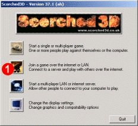
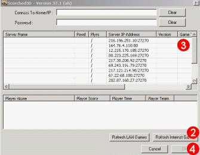
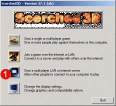
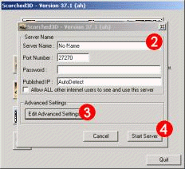

Introduction -> Online Guide
Joining an Online Game
Scorched3D can be played online either over the internet or a LAN. Server
browsing is now (as of version 36) integrated directly into the Scorched3D main
application. To play online:-

-
Start Scorched3D and choose "Internet/LAN" from the main menu dialog
 .
.
-
This will show the Scorched3D server browsing dialog. Refresh the list of
scorched servers clicking on the refresh button .
-
The server list should now have the list of available servers in it. Choose the
server you wish to join by clicking on the appropriate server name in the
server list . Depending on how many people
are on the server and the version of the server you may be unabled to join.
-
Click the join server button .
Starting A Scorched3D Server
To start a Scorched3D server:-

-
Start Scorched3D and choose "Server" from the main menu dialog .
-
Choose any server options and any game options
you want the server to have.
NOTE: The Scorched3D server browsing code will try to automatically determine
the IP address of the server. If the server is behind a NAT or web proxy this
may fail. In this case it may be necessary to specify the server IP address in
the box provided on the server settings page.
-
Start the server .
Once the server is running server conectivity can be checked by going to the
Scorched3D homepage (http://www.scorched3d.co.uk) and choosing the servers tab.
If you can see your server, and all its details, on this page then it is a good
bet that other people will be able to connect. If you cannot see you server on
this page then you may need to manually enter your ip address (see step 2
above) or open/forward some ports on you machine (see here).
ASE (All Seeing Eye) Support
Scorched3D no longer supports server browsing via the ASE (all seeing eye)
server browser. This change was required to give us complete open source and
cross platform compliance. We would like to thank the ASE team for all the
support and the free use of their great product. It was much appreciated and
Scorched3D would not have had online play without them.